→
01DRIVETube
Видео, каналы, эфиры и сообщество.
 Открыть ГармоньDRIVETube ↗
Открыть ГармоньDRIVETube ↗

Народная музыка в современном звучании
Концертный проект Павла УхановаGармонь Drive — вокально-инструментальный концертный проект, построенный на живом звуке, сценической энергии и уважении к традиции.
Семь артистов — гармонь, вокал и танец — превращают народную музыку в современное шоу.
Для зрителей, которым важны сильная подача, узнаваемая мелодия и настоящий контакт со сценой.
Полная история проекта ↗НАША КОМАНДА
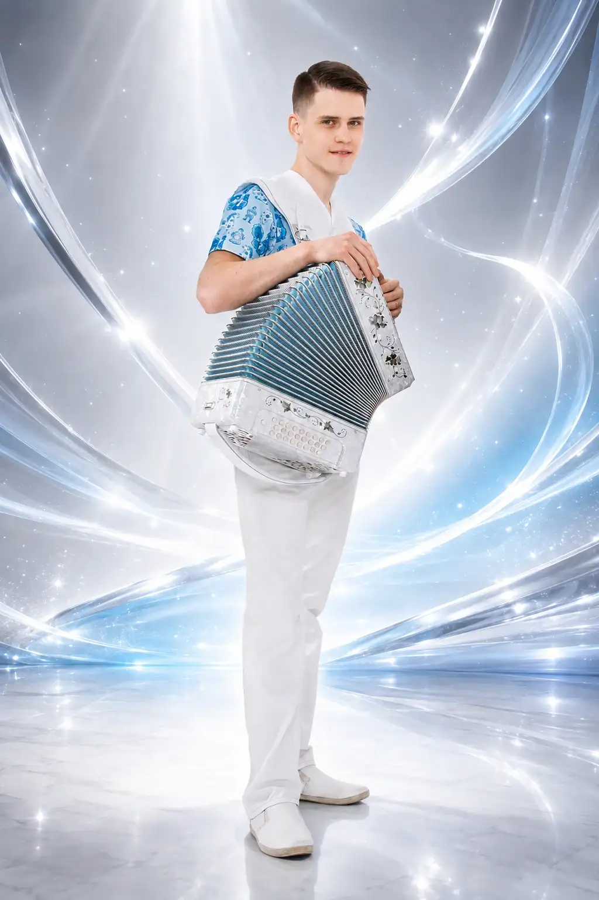
Руководитель · гармонист
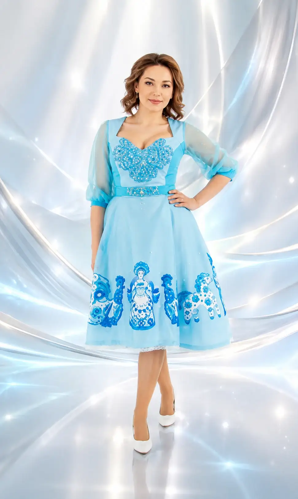
Вокал · солистка
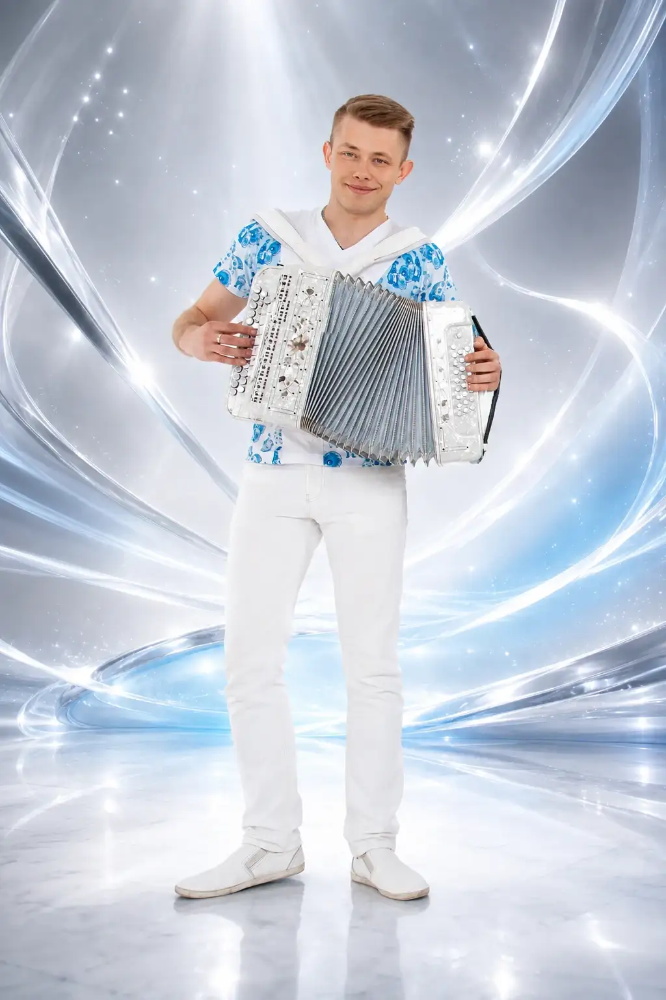
Гармонист
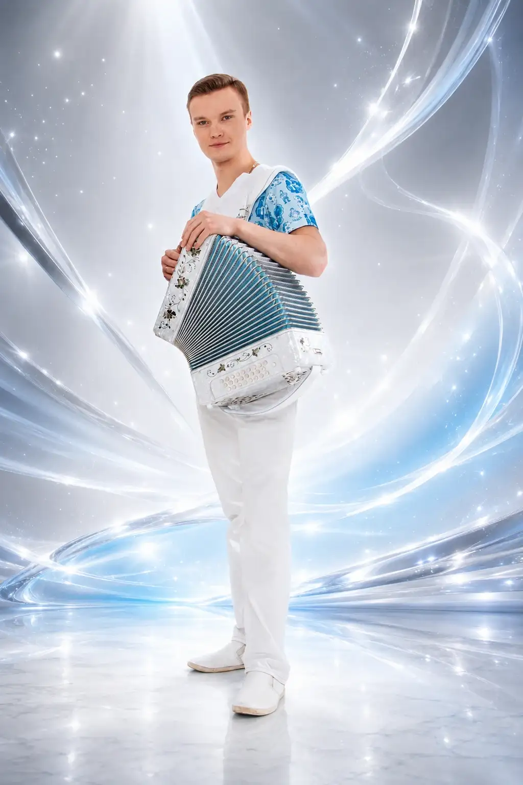
Гармонист
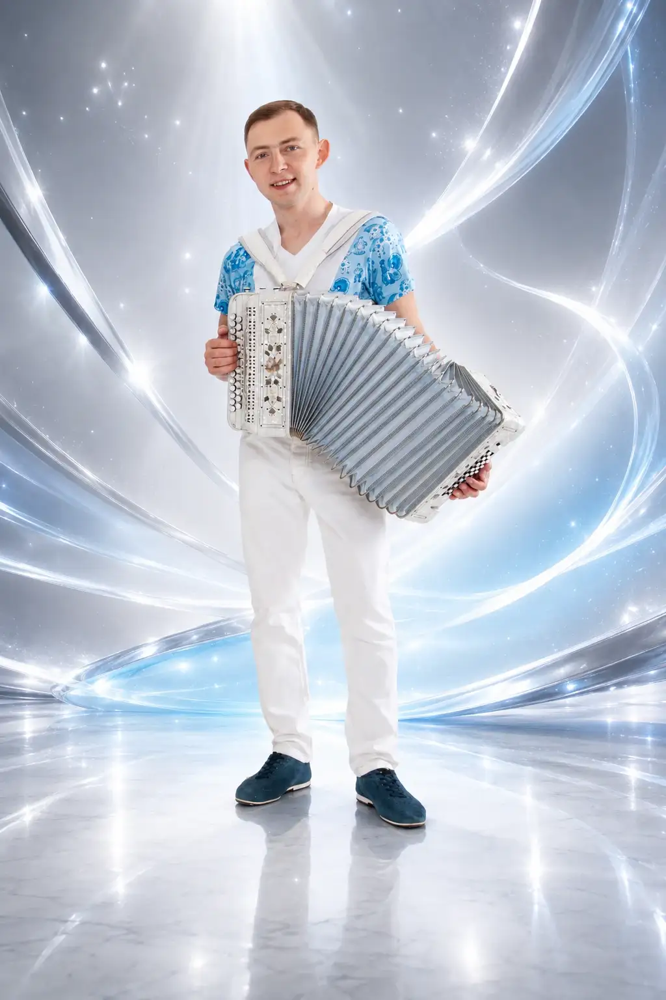
Гармонист
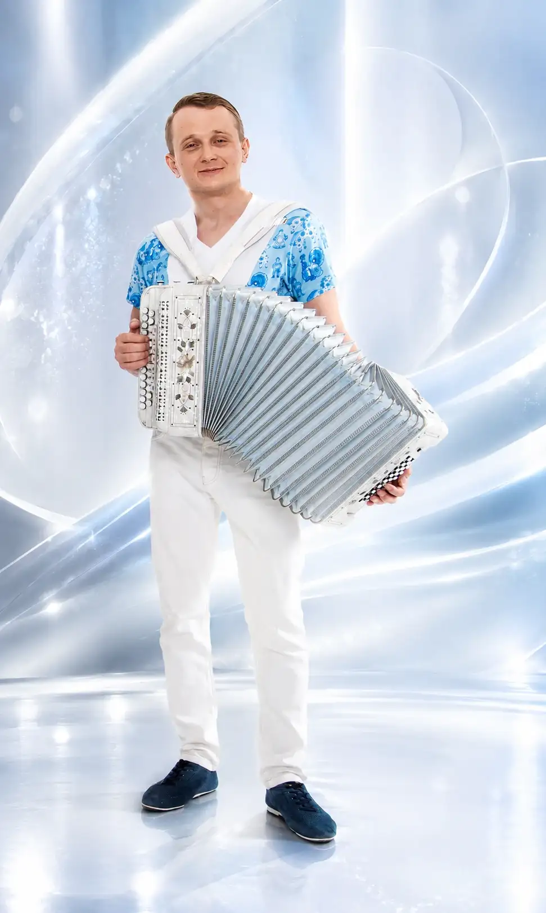
Гармонист
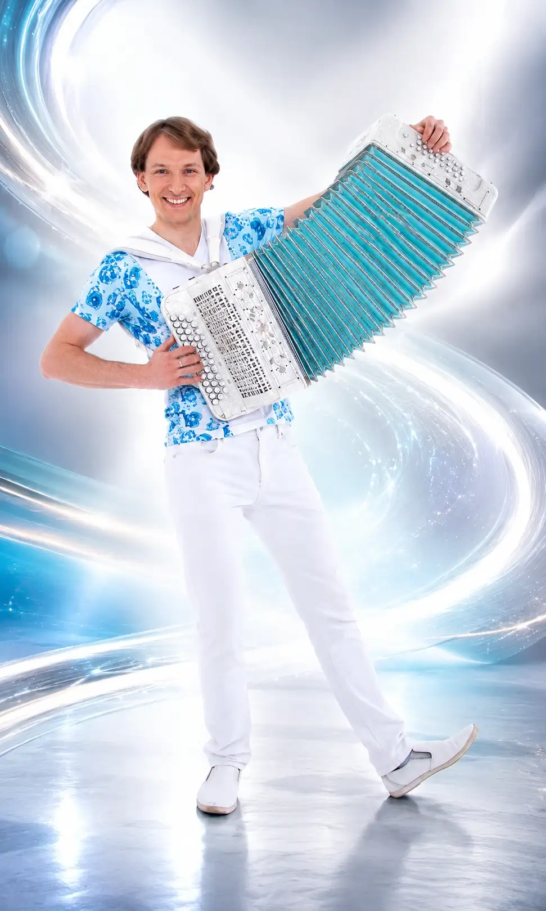
Гармонист
Видео, каналы, эфиры и сообщество.
Открыть ГармоньDRIVETube ↗Эфир, программа, концерты и прямые трансляции.
 Открыть ГармоньDRIVE ТВ ↗
Открыть ГармоньDRIVE ТВ ↗АЛЬБОМ
СОБЫТИЯ

МЕДИА
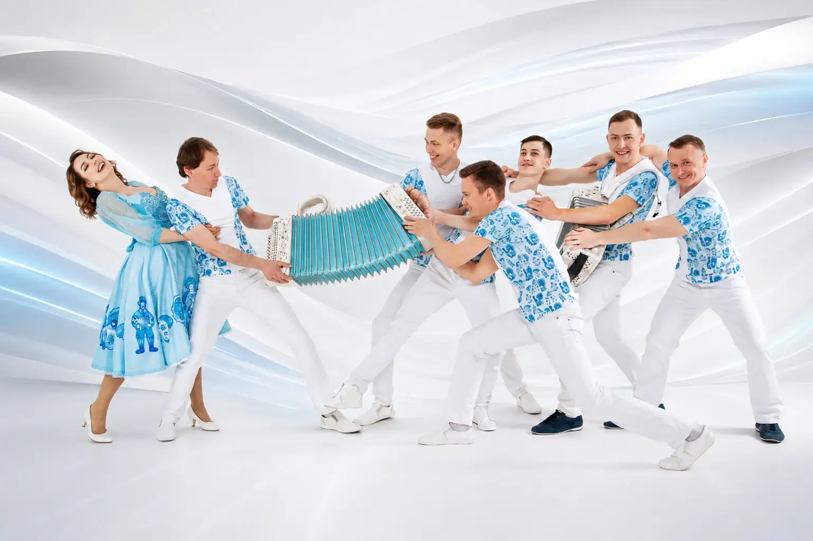
Gармонь Drive / УСЛУГИ
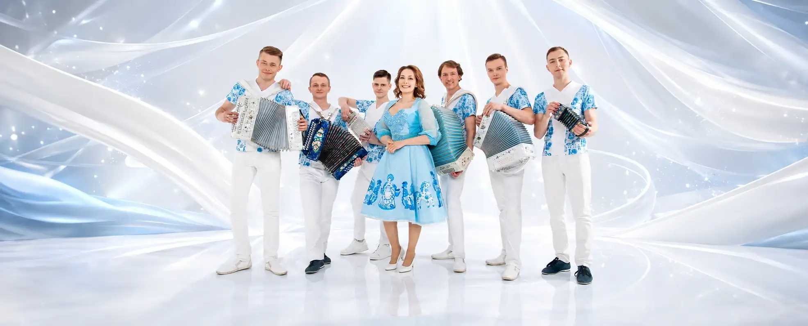
Gармонь Drive / УСЛУГИ

Gармонь Drive / УСЛУГИ

Gармонь Drive / УСЛУГИ
СЛУШАТЬ
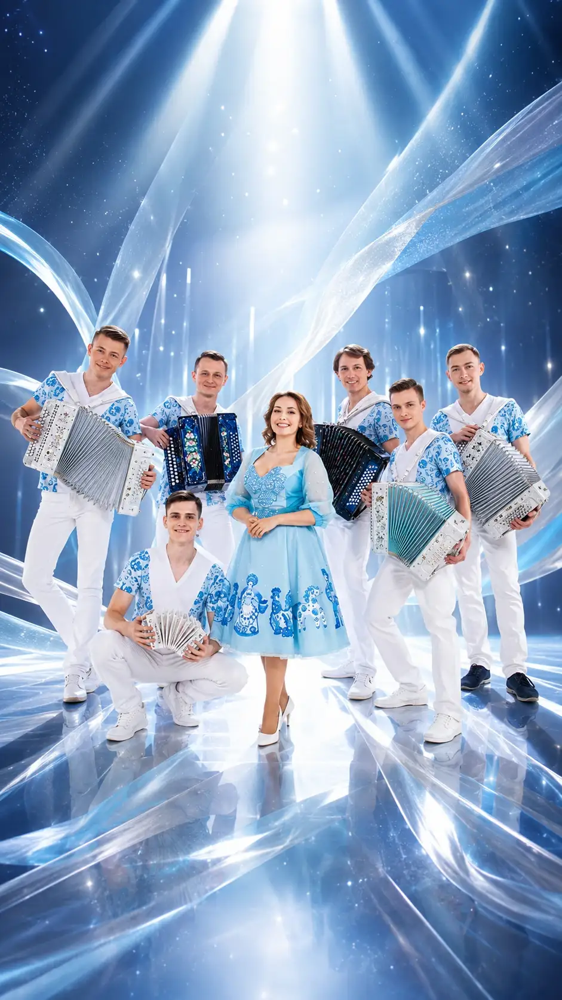
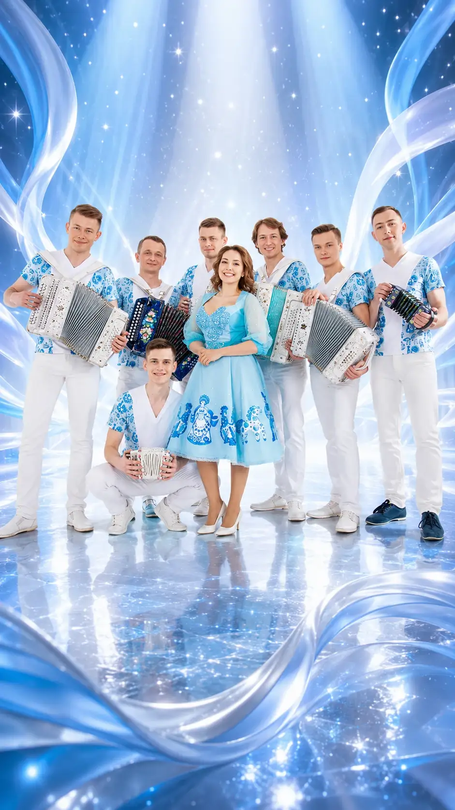